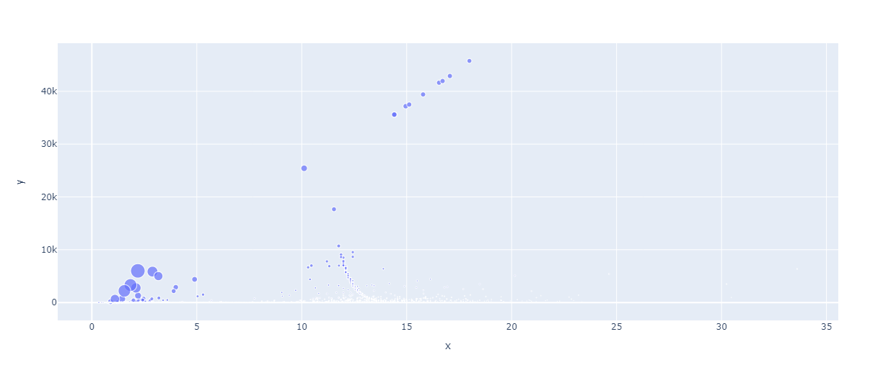

.png)
.png)
Fato Curioso
Agora, antes de prosseguirmos, vamos aprender um fato divertido.
O grande cientista Albert Einstein derivou uma fórmula com a qual podemos calcular a gravidade de qualquer planeta.
A fórmula é esta:
Aqui,
G é uma constante gravitacional, o que significa que será sempre a mesma.
m é a massa da Terra (ou de qualquer outro planeta se estivermos calculando para outro planeta)
r é o raio do planeta
Podemos ver aqui uma relação inversa entre o raio do planeta e a gravidade.
Quanto maior o raio (e maior o planeta), menor será a gravidade.
Mas também vemos uma relação direta entre a massa do planeta e a gravidade.
Quanto maior a massa do planeta, maior será a gravidade.
A gravidade da nossa Terra é de 9,8m/s2, e nós, como humanos, estamos acostumados a ela. Para podermos existir em qualquer outro planeta, a gravidade deve estar próxima da que temos aqui.
Marte tem uma gravidade de 3,711m/s2 e a Lua tem uma gravidade de 1,62m/s2.
Gráfico de Dispersão
Com base no que acabamos de aprender, vamos tentar plotar um gráfico de dispersão de todos os planetas, onde teremos a massa do planeta como a coordenada Y, o raio do planeta como coordenada X e a gravidade como o tamanho dos pontos no gráfico. Vamos ver se achamos algo interessante!
O valor de G (constante gravitacional) é 6,674e-11
Massa da Terra = 5,972e+24
Raio da Terra = 6371000
Observação - Como temos os dados planet_mass e planet_radius em relação à Terra, não se esqueça de multiplicar a massa da Terra e o raio da Terra por esses valores!
.png)


Fato Curioso
Nossos corpos humanos em pé podem suportar uma força gravitacional 90 vezes mais forte que a da Terra!
Planetas com Gravidade Habitáveis
Embora isso seja um pouco extremo, ainda podemos sobreviver a 10 vezes a gravidade que temos na Terra.
Vamos listar todos os nomes dos planetas que possuam gravidade 100 ou menos!
